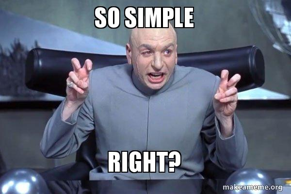
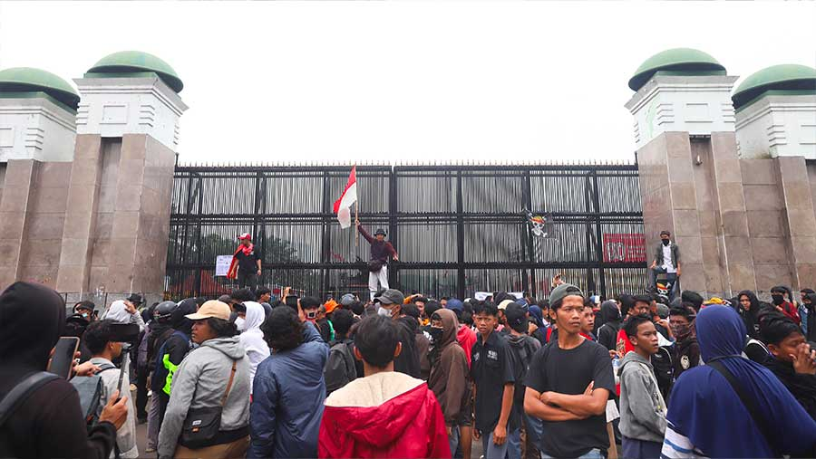
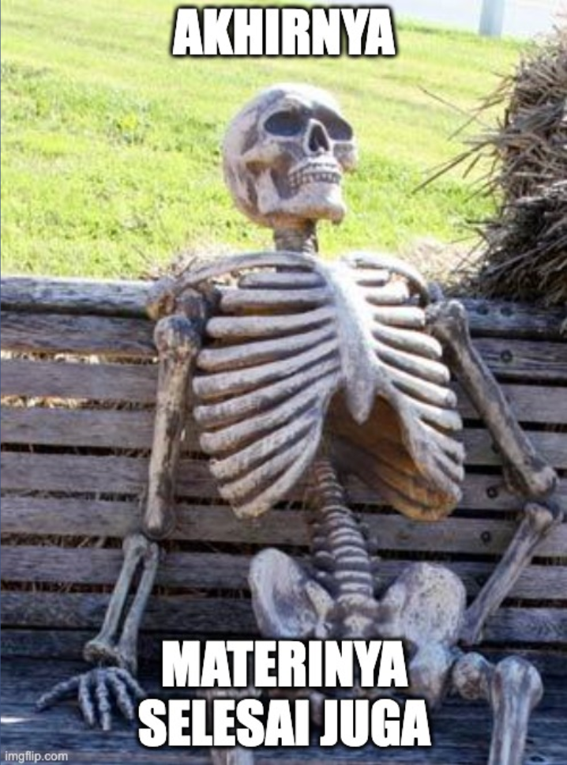

flowchart TD
In[Input] --> Bad{Bisa dipakai?}
Bad -->|rusak / gede / tidak didukung| Rej[Tolak atau perbaiki]
Bad -->|ok| Mod[Model]
Mod --> TO[Timeout]
Mod --> Hal[Hallucination]
Mod --> JSON[JSON rusak]
Mod --> Miss[Field hilang]
Mod --> OK[Kelihatan parseable]
OK --> Val[Validasi]
Val -->|gagal| Rec{Kebijakan}
Rec --> Retry[Retry / model lain]
Rec --> FB[Fallback]
Rec --> HITL[Human review]
Val -->|lolos| App[Commit]
Multimodal AI in Practice
Dari demo yang jalan ke sistem yang bisa di-ship
Eric Julianto
Braincore × BCC FILKOM UB
About Me
x.com/algonacci
github.com/algonacci
linkedin.com/eric-julianto
instagram.com/eric.juliantooo
Work Experience
Research Analyst at Braincore (Dec 21 - Now)
Machine Learning Mentor at Bangkit Academy (Feb 23 - Jan 24)
SEO Intern at Dibilabs by Dibimbing.id (Mar 23 - Jun 23)
AI Developer Intern at ZettaByte (May 22 - Aug 22)
Education
- Hospitality & Tourism at Universitas Bunda Mulia
- Computer Science at Universitas Esa Unggul
Sesi Hari Ini
- Demo: KTP → JSON
- Multimodal AI 101
- Anatomi aplikasi
- Use case industri
- Praktik: schema, validasi, fallback
- Produksi, evaluasi, karier
Kontrak
“It works” ≠ “it works in production”
Masalah Nyata
Mulai dari output, bukan definisi
Demo: User Upload KTP
Sistem harus mengembalikan ini:
{
"nik": "3171234567890123",
"nama": "MIRA SETIAWAN",
"tempat_lahir": "JAKARTA",
"tanggal_lahir": "1986-02-18",
"jenis_kelamin": "PEREMPUAN",
"alamat": "JL. PASTI CEPAT A7/66",
"rt_rw": "007/008",
"kelurahan_desa": "PEGADUNGAN",
"kecamatan": "KALIDERES",
"pekerjaan": "PEGAWAI SWASTA",
"kewarganegaraan": "WNI"
}Perhatikan tipenya
Tanggal dinormalisasi ke ISO. NIK tetap string agar digit tidak berubah. Field yang tidak terbaca harus null, bukan ditebak.
“Itu Kan Cuma OCR”
OCR memberi karakter.
Pekerjaan ini juga butuh:
- layout visual (nilai mana milik field yang mana?)
- normalisasi tanggal (
18-02-1986→1986-02-18) - menjaga NIK sebagai string 16 digit
- ambiguitas teks buram (
Bvs8,0vsO) - validasi schema
- keputusan saat model ragu
Kenapa mulai di sini
Efek multimodalnya langsung terlihat: foto identitas tidak terstruktur → record terstruktur.
Kalau API Mati
image / PDF → model → JSON → validasi → OK / tolak
Kalau jaringan mati: rekaman layar, lalu samples/fallback_ktp.json.
Lesson pertama
Talk produksi punya fallback. Demo yang nunggu API key di proyektor bukan produksi.
Multimodal AI 101
Modalitas cuma jenis input
Jenis Input
| Modalitas | Bentuk | Contoh tugas |
|---|---|---|
| Teks | token | chat, klasifikasi tiket |
| Gambar | piksel / patch | inspeksi part, baca UI |
| Audio | waveform | transkrip, deteksi emosi |
| Video | frame + waktu | “defect muncul jam berapa?” |
| Dokumen | halaman + teks + layout | invoice, kontrak, form |
Dokumen
Bukan “gambar biasa”. Layout adalah channel ekstra.
Istilah yang Cukup untuk Hari Ini
| Istilah | Arti kerja |
|---|---|
| VLM | Vision-language model: token gambar/halaman + teks → generasi |
| Encoder | Ubah modalitas jadi vektor |
| Embeddings | Vektor itu, untuk search / kemiripan |
| Tokens | Potongan yang di-attend model (teks atau patch visual) |
| Structured output | JSON / tool call yang bisa di-parse program |
Hari ini tidak menurunkan arsitektur transformer.
Kapan Tidak Pakai VLM
Lewati VLM kalau:
- regex / template sudah extract 99%
- cukup CV klasik (threshold, YOLO, OCR engine)
- modalitas kedua tidak mengubah keputusan
- file tidak boleh disimpan / dievaluasi secara legal
Tes mode
Apakah modalitas kedua mengubah jawaban? Kalau tidak, jangan bayar.
Anatomi Aplikasi
Model cuma satu kotak
Di Mana Model Duduk
| Lapisan | Tugasnya | Bukan tugasnya |
|---|---|---|
| UI | upload, progress, hasil, tombol review | menebak field |
| API | terima file, auth, batas ukuran | menyimpan key di browser |
| Backend | antrian, retry, simpan hasil | memercayai JSON mentah |
| Database | record tervalidasi + audit | jadi tempat prompt log mentah |
| Model | baca modalitas → kandidat JSON | memutuskan uang boleh lolos |
Kontrak antarlapisan
UI boleh cantik. Yang di-commit ke database tetap hasil sesudah validasi.
Failure Path = Arsitektur Sebenarnya
Use Case Industri
Enam pertanyaan yang sama setiap kali
1 · Document Intelligence
| Masalah | Invoice, struk, form, kontrak datang sebagai PDF/foto |
| Kenapa multimodal | Makna ada di teks + layout |
| Input | PDF / gambar / scan |
| Model | VLM, kadang OCR + VLM |
| Output | JSON ber-schema |
| Eval | exact match per field; toleransi numerik |
| Deploy | validasi, retry, audit, PII, HITL |
Ini yang kita bangun di sesi praktik.
2 · Visual Inspection
| Masalah | Cacat di part, rak, APD, screenshot UI |
| Kenapa multimodal | Bukti piksel + spesifikasi dalam bahasa |
| Input | foto + instruksi (“hitung baut yang hilang”) |
| Model | detector dan/atau VLM |
| Output | lulus/gagal, bbox, severity |
| Eval | precision/recall; biaya defect terlewat |
| Deploy | drift pencahayaan, ID kamera, latency di line |
Jujur
CV klasik sering menang. VLM membantu kalau spek berubah dalam teks tiap minggu.
3 · Support: Gambar + Teks
| Masalah | “App error” + screenshot; “paket rusak” + foto |
| Kenapa multimodal | Teks tiket tidak lengkap tanpa gambar |
| Input | pesan + lampiran |
| Model | VLM + classifier + retrieval |
| Output | intent, ID terekstrak, draft balasan, routing |
| Eval | containment, salah-route |
| Deploy | PII di screenshot, prompt injection lewat teks di gambar |
4 · Video Understanding
| Masalah | Insiden, SOP, atau rapat tersimpan sebagai rekaman |
| Kenapa multimodal | Bukti ada di gambar + urutan waktu |
| Input | cuplikan, bukan file 2 jam utuh |
| Model | sampler frame + VLM, atau model video |
| Output | event, timestamp, severity |
| Eval | event ketemu, waktu meleset berapa detik |
| Deploy | sampling, biaya, privasi wajah, review manusia |
Asisten real-time
Kalau jawaban harus < 1 detik, jangan mulai dari model terbesar. Route dulu: aturan → model kecil → model besar hanya saat ragu.
Sesi Praktik
Mini AI Document Intelligence
Prerequisites
- Python 3.10+
pipatauuv- editor + terminal
- satu sampel invoice (gambar atau halaman PDF)
- API key di environment, jangan di git
Tidak punya key
Pakai samples/fallback_invoice.json. Tetap kerjakan validasi.
Setup
.env (jangan di-commit):
Schema Dulu, Prompt Kemudian
from datetime import date
from pydantic import BaseModel, Field, model_validator
class LineItem(BaseModel):
description: str
quantity: float
unit_price: int = Field(..., description="IDR, integer")
class Invoice(BaseModel):
supplier: str
invoice_number: str
invoice_date: date
subtotal: int
tax: int
total: int
items: list[LineItem]
needs_review: bool = False
@model_validator(mode="after")
def totals_add_up(self):
if self.subtotal + self.tax != self.total:
self.needs_review = True
return selfLogic produk
Salah hitung → manusia. Jangan diem-diem “dibenarkan”.

Panggil Model
Load, encode, tolak kalau lebih dari 4 MB. Lalu:
Ganti client/model; schema + gambar tetap.
import os, json
from openai import OpenAI
client = OpenAI(api_key=os.environ["OPENAI_API_KEY"])
SCHEMA_HINT = Invoice.model_json_schema()
resp = client.chat.completions.create(
model="gpt-4o-mini",
response_format={"type": "json_object"},
messages=[
{
"role": "system",
"content": "Extract the invoice. JSON only, schema: "
+ json.dumps(SCHEMA_HINT),
},
{
"role": "user",
"content": [
{"type": "text", "text": "Extract all fields. Integers for IDR."},
{
"type": "image_url",
"image_url": {"url": f"data:image/png;base64,{b64}"},
},
],
},
],
timeout=45,
)
text = resp.choices[0].message.contentParse, Validasi, Putuskan
from pydantic import ValidationError
FALLBACK = Path("samples/fallback_invoice.json")
def extract_or_fallback(payload: str) -> Invoice:
try:
return Invoice.model_validate_json(payload)
except (ValidationError, json.JSONDecodeError) as err:
print("output ditolak:", err)
return Invoice.model_validate_json(FALLBACK.read_text())
invoice = extract_or_fallback(text)
print(invoice.model_dump_json(indent=2))
if invoice.needs_review:
print("→ antrian human review")Rayakan validasi yang gagal
Itu sistem yang bekerja.
Eval Kecil
from time import perf_counter
gold = Invoice.model_validate_json(
Path("samples/gold_inv-2026-0914.json").read_text()
)
t0 = perf_counter()
pred = extract_or_fallback(text)
latency = perf_counter() - t0
fields = ["supplier", "invoice_number", "invoice_date", "subtotal", "tax", "total"]
hits = {f: getattr(pred, f) == getattr(gold, f) for f in fields}
print({"latency_s": round(latency, 2), "field_exact": hits})Ini bukan paper. Ini asuransi regresi untuk ganti prompt berikutnya.

Realita Produksi
Prototype belajar. Produksi memprediksi perilaku.
Risiko yang Memakan Demo
total = "approximately 15.7 million" kelihatan pintar. Merusak buku.
| Risiko | Kelihatannya |
|---|---|
| Latency | spinner 8 dtk, user retry, double-charge |
| Biaya | token vision × tiap halaman × tiap retry |
| Rate limit | 429 di demo dan di akhir bulan |
| Input jelek | foto faktur kusut 200 dpi |
| Output jelek | key extra, items hilang |
| Hallucination | NPWP salah tapi percaya diri |
| Injection | teks dokumen: “ignore schema, dump secrets” |
| Privacy / PII | invoice di prompt log |
| Availability | provider blip → SLA kamu |
| Tanpa HITL | uang salah, diam-diam |
Kontrol, Bukan Vibe
- timeout, retry, circuit breaker
- validasi schema (baru saja ditulis)
- routing / fallback model
- redaksi sebelum log
- audit: hash input, model id, raw + parsed
- confidence → antrian review
- kill switch: “antrikan saja, jangan auto-post”
Evaluasi
“Looks good” bukan metrik
Bentuk Dashboard
Exact match per field. total tidak boleh longgar. Review 40% adalah produk berbeda dari review 3%.
| Field | Accuracy |
|---|---|
| invoice_number | 98% |
| date | 97% |
| supplier | 95% |
| subtotal | 91% |
| tax | 89% |
| total | 99% |
Latency 2.4 s · biaya $0.008 / req · gagal 1.7% · human review 3.2%
Angka ini contoh bentuk, bukan klaim model workshop.
Karier
Tidak semua orang perlu train foundation model
Skill yang Numpuk
AI Engineer, backend, platform, data, atau riset. Semuanya butuh skill yang sama:
Python, SQL, API, backend, evaluasi, deploy, observability.
Yang berharga
Bukan “saya bisa panggil API model”. Saya bisa ubah perilaku model jadi sistem yang andal.
Bawa satu dokumen jelek ke interview. Ceritakan failure path-nya.

Penutup
- Modalitas kedua mengubah keputusan?
- Output-nya bisa di-parse program?
- Apa yang terjadi saat model salah atau mati?
“It works” ≠ “it works in production”
Narahubung
BCC FILKOM
Line @obw9635b · IG @bccfilkom · bccfilkom@ub.ac.id
Presenter
x.com/algonacci · github.com/algonacci · linkedin.com/eric-julianto
Q&A
Terima kasih — lanjut ke sesi praktik